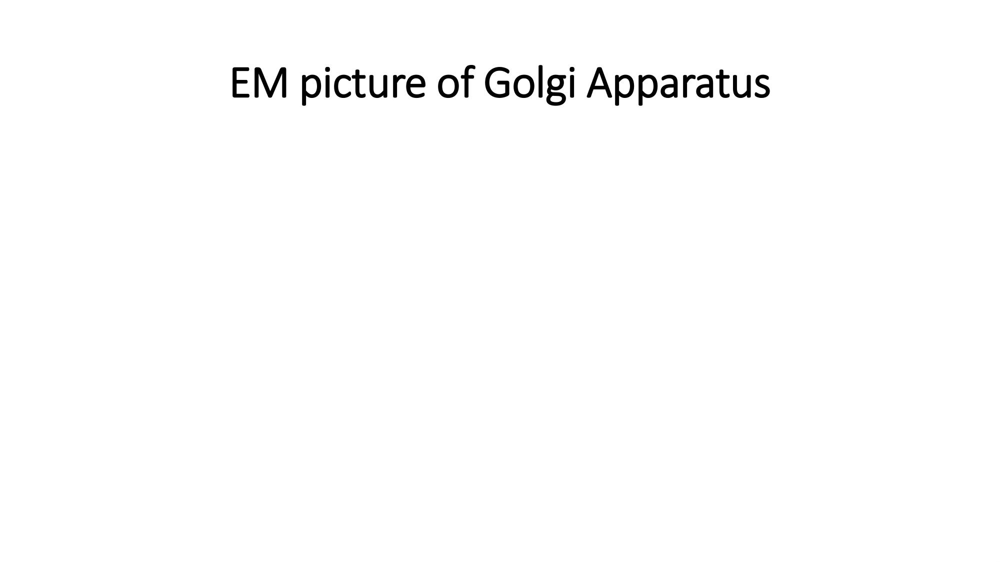
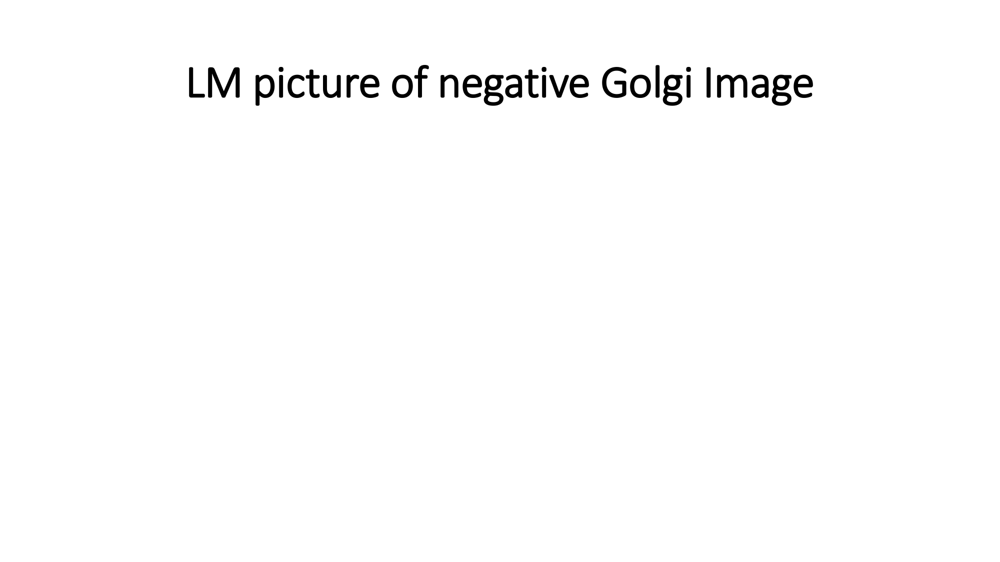
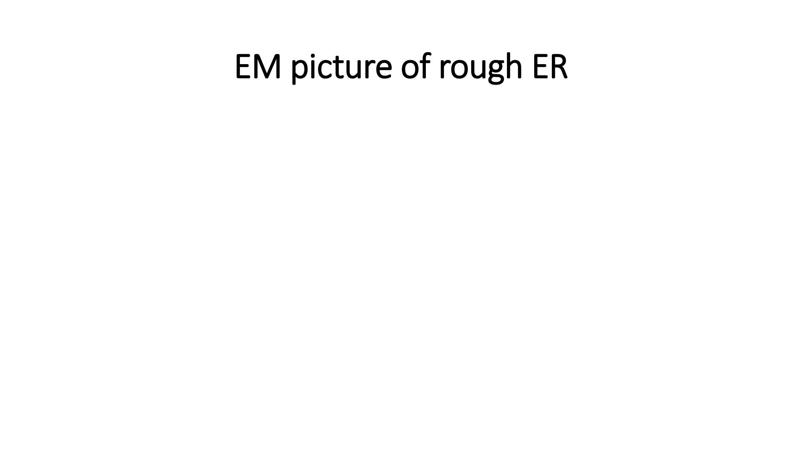
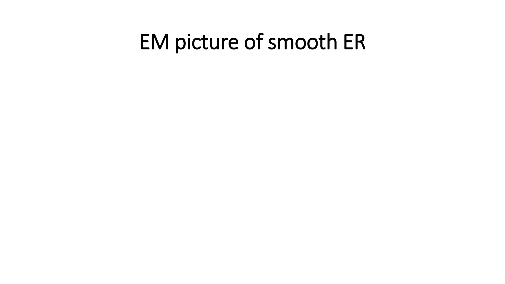
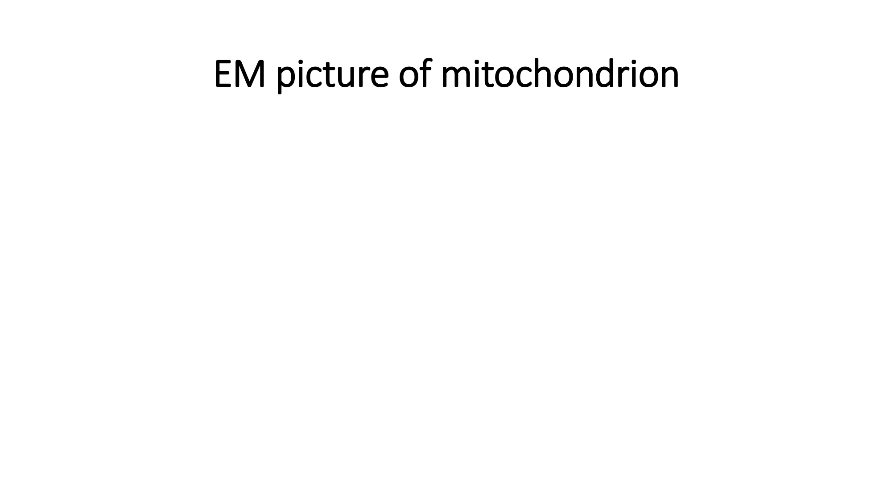
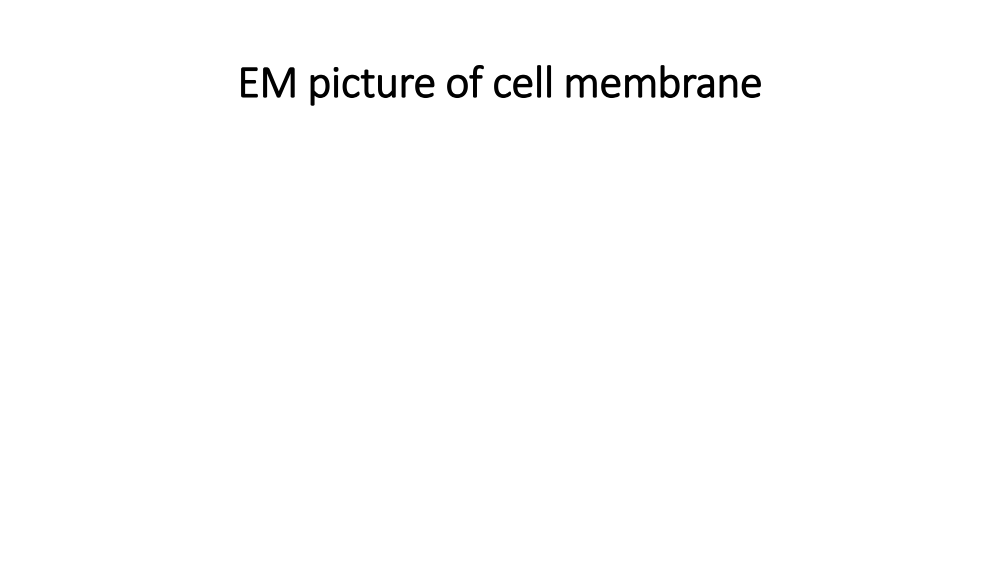
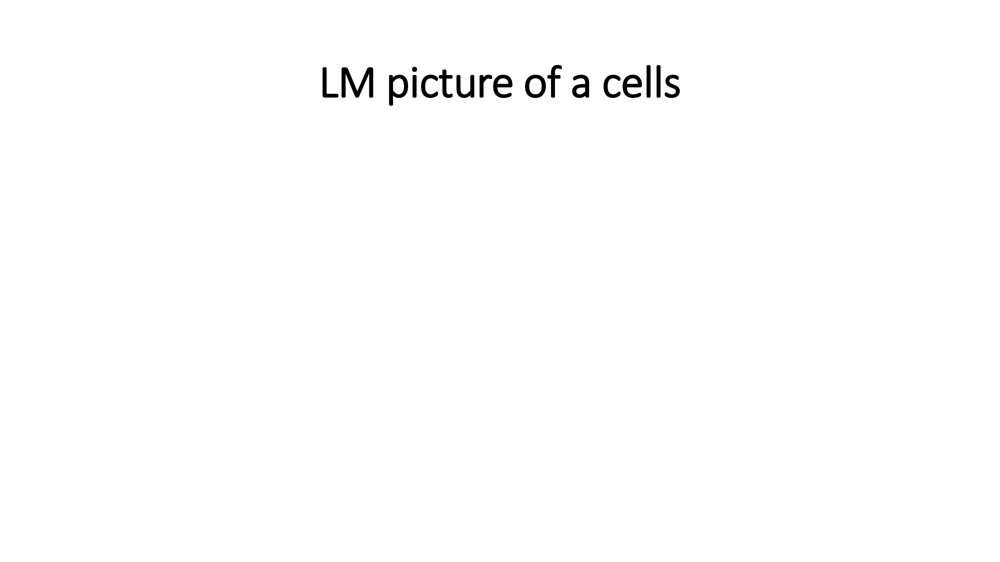
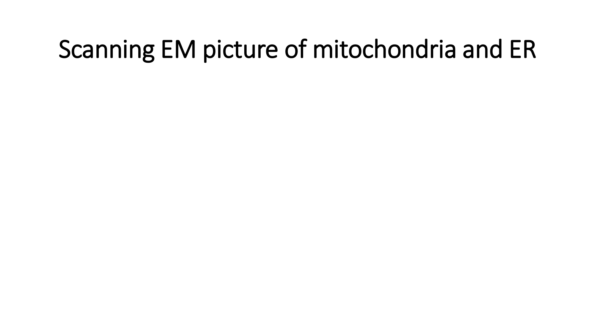
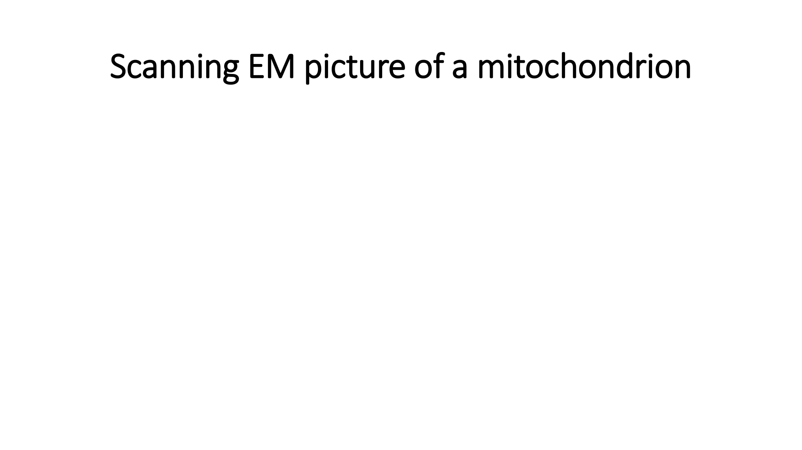

Lecture -1: Microscopy + Cytology-I
أستاذ المادة: د. ثروت لطفي عبد اللطيف (Dr. Sarwat L. A. Abdel-Latif)
شرح تفصيلي ومبسط يغطي بدقة كامل محتوى ملف المحاضرة: أساسيات الميكروسكوبات الضوئية والإلكترونية، وحدات القياس، مكونات الخلية والسيتوبلازم، الغشاء الخلوي، الميتوكوندريا، الشبكة الإندوبلازمية بنوعيها، وجهاز جولجي، مع نطق المصطلحات الطبية وصور السلايدات وبنك أسئلة العملي والنظري.
الأهداف التعليمية للمحاضرة
بناءً على الشريحة 2 من المحاضرة، بنهاية هذا الدرس يكون الطالب قادراً على:
المقارنة الدقيقة بين الميكروسكوب الضوئي (Light) والإلكتروني (Electron).
تصنيف العضيات السيتوبلازمية إلى غشائية (Membranous) وغير غشائية (Non-membranous).
وصف التركيب الجزيئي لغشاء الخلية وتحديد النسبة المئوية الدقيقة لكل مكون.
التعرف على تركيب ووظيفة غلاف الخلية (Cell coat) والربط بين تركيب الميتوكوندريا ووظيفتها.
علم الأنسجة، الميكروسكوبات، ووحدات القياس
هو دراسة التركيب المجهري الدقيق للأنسجة السليمة الطبيعية (Microscopic Structure of normal tissue).
التدرج التركيبي لجسم الإنسان (Human Body Hierarchy)
كما توضح الشريحة 12، يتدرج بناء جسم الإنسان من الوحدة الأساسية حتى الجسم الكامل:
وحدات القياس المجهرية (Measurements & Units)
وفقاً للشريحة 5، التحويلات الرياضية الدقيقة للوحدات المجهرية هي:
المقارنة الشاملة بين الميكروسكوب الضوئي والإلكتروني (L.M vs E.M)
جدول المقارنة المعتمد نصياً من الشريحة 7:
| وجه المقارنة | الميكروسكوب الضوئي Light Microscope (L.M) | الميكروسكوب الإلكتروني Electron Microscope (E.M) |
|---|---|---|
| مصدر الإضاءة (Source of illumination) | أشعة الضوء (Light rays) | حزمة إلكترونات (Electrons beam) |
| قوة التكبير (Magnifying power) | تصل إلى 1500 - 2000 ضعف (up to x 1500-2000) | 10,000 ضعف وأكبر بكثير (x 10,000 & MUCH larger) |
| مجال الفحص والاستخدام (Used for examination of) | الخلايا الكاملة والأنسجة (Whole cells & tissues) | العضيات الداخلية الدقيقة (Intracellular Organelles) |
| الأنواع (Types) | نوع واحد فقط (Only one type) | نوعان: نافذ (Transmission E.M) / ماسح (Scanning E.M) |
| معالجة وصبغ العينة (Specimen treated with) | صبغة الهيماتوكسيلين والإيوسين في الغالب (H&E [Hematoxylin + Eosin]) | بودرة المعادن الثقيلة (Metal powder) |

"Mitochondria, as such, can NOT be seen with light microscopy. But their site can be highlighted with special stains. The way to visualize mitochondria directly is ONLY through electron microscopy."
التعريب: لا يمكن رؤية الميتوكوندريا بذاتها تحت الميكروسكوب الضوئي، ولكن يمكن تحديد موقعها بصبغات خاصة. والسبيل الوحيد لرؤيتها وفحصها مباشرة هو عبر الميكروسكوب الإلكتروني حصراً.


علم الخلية ومكونات السيتوبلازم
الخلية هي الوحدة التركيبية والوظيفية لجسم الإنسان (Structural & functional unit)، وتتميز بأشكال وأحجام متعددة ومتباينة (Different shapes & sizes).
تتكون الخلية الحية من: السيتوبلازم (Cytoplasm) + النواة والعضيات (Nucleus & organelles).
مكونات السيتوبلازم الثلاثة (الشريحة 16)
ينقسم السيتوبلازم إلى 3 مكونات رئيسية:
محلول غروي (Colloid solution) يحتوي على:
• بروتينات (Proteins)
• كربوهيدرات (Carbohydrates)
• دهون (Lipids)
• معادن (Minerals)
• إنزيمات (Enzymes)
حية ودائمة ودقيقة:
• تراكيب حية دقيقة دائمة (Living & Permanent)
• ضرورية لحياة الخلية للعمليات الحيوية كالتنفس والإفراز والهضم.
• أمثلة: الميتوكوندريا، جهاز جولجي، الليسوسومات.
غير حية ومؤقتة:
• تراكيب غير حية مؤقتة (Non-living & Temporary)
• غير ضرورية لحياة الخلية.
• أمثلة: مواد مخزنة كالنشا الحيواني (Glycogen)، الدهون (Fat)، والصبغات (Pigments).


تصنيف العضيات السيتوبلازمية (Types of Cytoplasmic Organelles)
وفقاً للشريحة 19، تُصنف العضيات السيتوبلازمية بحسب وجود غشاء يحيط بها إلى:
- غشاء الخلية (Cell membrane)
- الميتوكوندريا (Mitochondria)
- الشبكة الإندوبلازمية الخشنة والملساء (Endoplasmic reticulum - rough & smooth)
- جهاز جولجي (Golgi apparatus)
- الليسوسومات (Lysosomes)
- الريبوسومات (Ribosomes)
- الهيكل الخلوي (Cytoskeleton):
a. الأنيبيبات الدقيقة (Microtubules) كالأجسام المركزية (Centrioles) والأهداب (Cilia).
b. الخيوط الدقيقة (Filaments) بأنواعها: الرفيعة والمتوسطة والسميكة (Thin, Intermediate & Thick).

1. غشاء الخلية والغلاف الخلوي
المظهر المجهري لغشاء الخلية تحت L.M و E.M
• غير مرئي (Invisible) لأنه شديد الرقة؛ سمكه يتراوح بين 8 إلى 10 نانوميتر فقط (8-10 nm).
• لكن يمكن صبغه بصبغات خاصة: صبغة PAS أو صبغة الفضة Ag (Special stains: PAS or Ag).
• يظهر كغشاء ثلاثي الصفائح (Trilamellar membrane):
عبارة عن خطين داكنين متوازيين تفصل بينهما طبقة فاتحة (2 dark parallel lines, separated by light one).


التركيب الجزيئي ونسب مكونات غشاء الخلية (Molecular Structure)
كما ورد في الشريحة 23، يتكون غشاء الخلية من ثلاث نسب مئوية محددة:

وفقاً للشريحة 24:
• مكون الكربوهيدرات (10%) عبارة عن سكريات متعددة (Polysaccharides).
• ترتبط إما بالبروتين فتسمى بروتينات سكرية (Glycoprotein) أو بالدهون فتسمى دهون سكرية (Glycolipid).
• مجموع Glycolipid + Glycoprotein يشكل ما يُعرف بـ غلاف الخلية (Cell coat or Glycocalyx).

وظائف غشاء الخلية وغلافها (Functions of Cell Membrane)
كما تم تلخيصها في الشريحة 25:
تنظيم دخول وخروج المواد من وإلى الخلية عبر عدة آليات:
• النقل السلبي (Passive transport)
• النقل النشط (Active transport)
• النقل الميسر (Facilitated transport)
• الحماية الميكانيكية للخلية (Mechanical protection).
• المناعة الخلوية والحساسية عبر المستقبلات (Cell immunity & allergy through receptors).
2. الميتوكوندريا (محطات الطاقة)
توجد بأعداد وفيرة في الخلايا النشطة الأيضية (Numerous in active cells).
مثال هام من الشريحة 27: تحتوي خلية الكبد على ما يصل إلى 2000 ميتوكوندريا في الخلية الواحدة (liver cells contain up to 2000/cell).

التركيب الدقيق للميتوكوندريا تحت E.M (الشريحة 28)
- حويصلات دائرية أو بيضاوية أو مستطيلة (Round, oval or elongated vesicles).
- محاطة بغشاء مزدوج (Covered with double membranes):
• الغشاء الخارجي أملس (Outer membrane is smooth).
• الغشاء الداخلي يشكل ثنيات تُسمى الأعراف (Inner membrane forms folds [Cristae]).
- الحشوة (Matrix) تملأ التجويف الداخلي وتحتوي على: دهون، بروتينات، كربوهيدرات، Ca، Mg، و DNA، و RNA، وإنزيمات أكسدة (Oxidative enzymes).
- الوظيفة الحيوية: تكوين جزيئات الطاقة ATP [Adenosine Triphosphate] التي تعد مصدر الطاقة الأساسي، ولذلك تسمى محطات الطاقة في الخلية (Powerhouses of living cells).


3. الشبكة الإندوبلازمية (rER مقابل sER)
التعريف (Def): شبكة من القنوات المتصلة ببعضها البعض داخل السيتوبلازم (Network [reticulum] of intercommunicating channels in cytoplasm).
النوعان:
A. خشنة rough (لوجود ريبوسومات ملتصقة بها).
B. ملساء smooth (لعدم وجود ريبوسومات).

المقارنة الحاسمة بين rER و sER (الشرائح 32 و 33)
| وجه المقارنة | الشبكة الإندوبلازمية الخشنة rER | الشبكة الإندوبلازمية الملساء sER |
|---|---|---|
| الموقع والتواجد (Site) |
توجد في الخلايا المصنعة للبروتين (Protein forming cells):
• خلايا البلازما (Plasma cells) • بانيات العظم (Osteoblasts) • خلايا البنكرياس (Pancreas) |
توجد في الخلايا المصنعة للدهون والغدد الصماء:
• خلايا الكبد (Liver) • الغدة الكظرية / فوق الكلوية (Suprarenal gland) |
| تحت الميكروسكوب الإلكتروني (E.M) | ريبوسومات ملتصقة بالسطح تعطي مظهراً خشناً (Attached ribosomes → Rough surface) | خالية من الريبوسومات ولها سطح أملس (No ribosomes → Smooth surface) |
| الوظائف الحيوية (Functions) | تصنيع البروتين بواسطة الريبوسومات، ثم نقل هذا البروتين إلى جهاز جولجي (Synthesis of protein → transfer to Golgi). |
5 وظائف رئيسية:
1. تصنيع الدهون والهرمونات الستيرويدية (Synthesis of Lipids & steroid hormones). 2. تخزين الجليكوجين في الكبد والعضلات (Storage of glycogen). 3. تخزين وضخ الكالسيوم لانقباض العضلات (Storage & pump of Ca → muscle contraction). 4. إزالة سمية الكحول وبعض الأدوية في الكبد (Detoxification of alcohol & drugs). |


4. جهاز جولجي (الجهاز الإفرازي)
• يُعرف بـ الجهاز الإفرازي للخلية (The secretory system of the cell).
• سُمي تيمناً بعالم الأنسجة الإيطالي كاميلو جولجي (Camillo Golgi) الذي اكتشفه عام 1898.
• يكون متطوراً وبارزاً جداً في الخلايا الإفرازية (Well developed in secretory cells).

لا يصبغ بصبغة H&E (لأنه يذوب أثناء خطوات تحضير الشريحة بسبب محتواه العالي من الدهون في أغشيته).
➔ فيترك منطقة باهتة وفارغة في السيتوبلازم تُسمى "صورة جولجي السلبية" (Negative Golgi image) أو "شبح جولجي" (Golgi ghost).

التركيب الدقيق لجهاز جولجي تحت E.M (الشرائح 39 و 40)
يتكون من أكياس غشائية منحنية ومسطحة متعددة متراصة فوق بعضها كالأطباق (Many flat curved membranous saccules stacked over each other).
هو الوجه المستقبل، يستقبل حويصلات النقل القادمة من rER.
• الوجه الناضج (Mature / Trans face):
هو منطقة الشحن والتصدير (Shipping area)، وينتج نوعين من الحويصلات:
1. حويصلات إفرازية للإخراج الخلوي (Secretory vesicles for exocytosis)
2. الليسوسومات (Lysosomes)


يكمل وظيفة الشبكة الخشنة rER عبر أمرين رئيسيين:
1. تعديل البروتينات المصنوعة بواسطة rER ثم إفرازها خارج الخلية (Modification of proteins formed by rER → Discharged as secretions).
2. تكوين الليسوسومات وعزل إنزيماتها الهاضمة (Formation of lysosomes & isolation of their enzymes).


شرائح العملي والتعرف المجهري (Spot Diagnosis)
اختبر قدرتك على التعرف على شرائح العملي الواردة في نهاية ملف المحاضرة (مع إمكانية الضغط على "إظهار التشخيص" للتحقق):

ملاحظة: أكياس غشائية مسطحة ومنحنية متراصة (stacked curved saccules) مع حويصلات عند أطرافها.

ملاحظة: منطقة شاحبة باهتة مجاورة للنواة في السيتوبلازم (Golgi Ghost) لا تصبغ بـ H&E.

ملاحظة: قنوات صفائحية متوازية مغطاة بحبيبات داكنة تمثل الريبوسومات (Attached ribosomes).

ملاحظة: شبكة من الأنيبيبات المتفرعة الملساء بدون أي ريبوسومات ملتصقة.

ملاحظة: حويصلة بغشاء مزدوج خارجي أملس وثنيات داخلية عريضة (Cristae) تحيط بالحشوة.

ملاحظة: غشاء ثلاثي الصفائح (Trilamellar): خطان داكنان متوازيان بينهما خط فاتح.

ملاحظة: خلايا تحت الميكروسكوب الضوئي توضح النواة والسيتوبلازم والحدود الخلوية.

ملاحظة: صورة ثلاثية الأبعاد بالميكروسكوب الإلكتروني الماسح توضح الميتوكوندريا والشبكة الإندوبلازمية.

ملاحظة: ميتوكوندريا مجسمة ثلاثية الأبعاد بوضوح فائق بواسطة Scanning EM.
ملاحظة: ميتوكوندريا موضحة الأعراف الداخلية المعترضة (Cristae) والحشوة.
الاختبار التفاعلي الشامل (MCQ Quiz)
جميع الأسئلة مستخلصة بنسبة 100% من نص ومعلومات ملف المحاضرة. اضغط على الإجابة لتصحيحها فوراً مع الشرح والتعليل بالعربية: